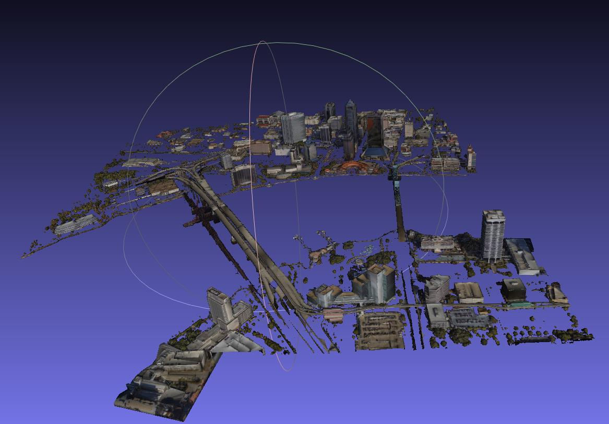
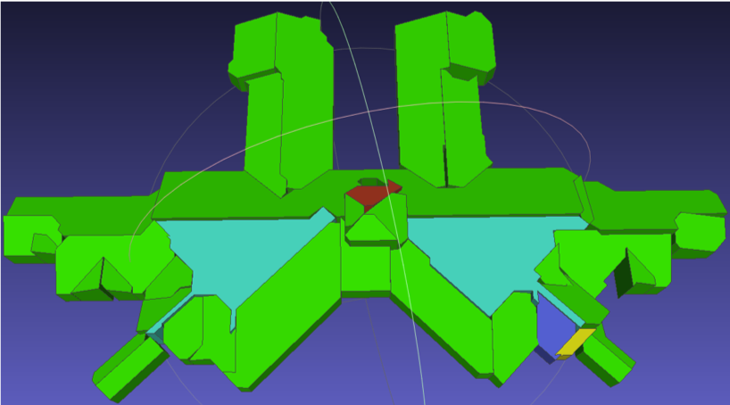
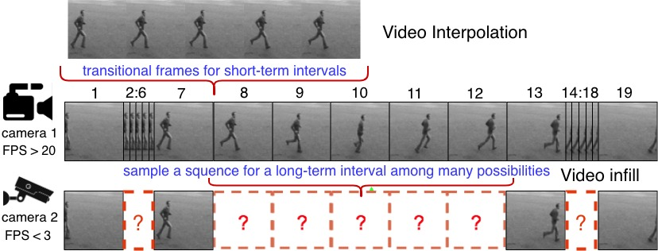
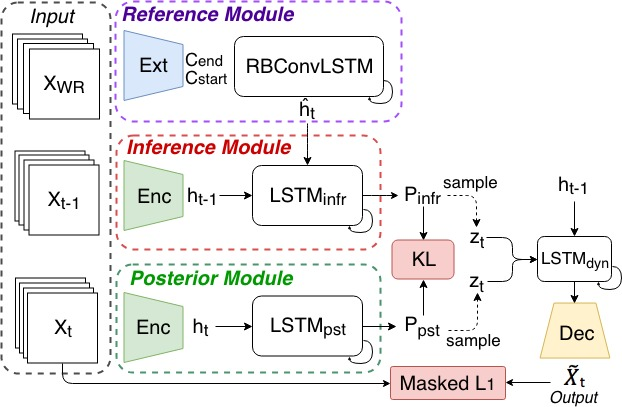
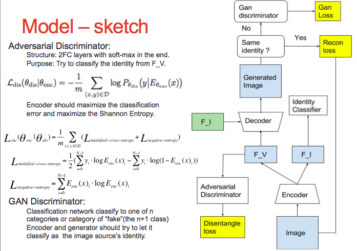
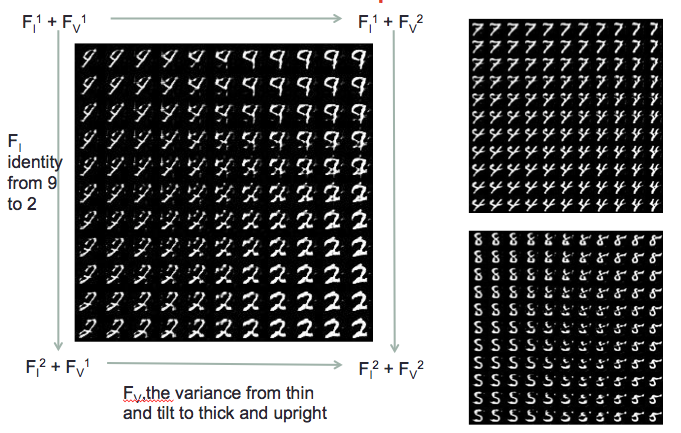
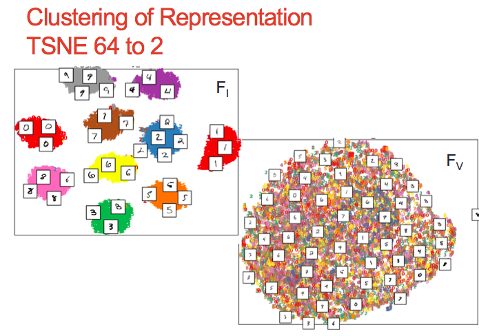
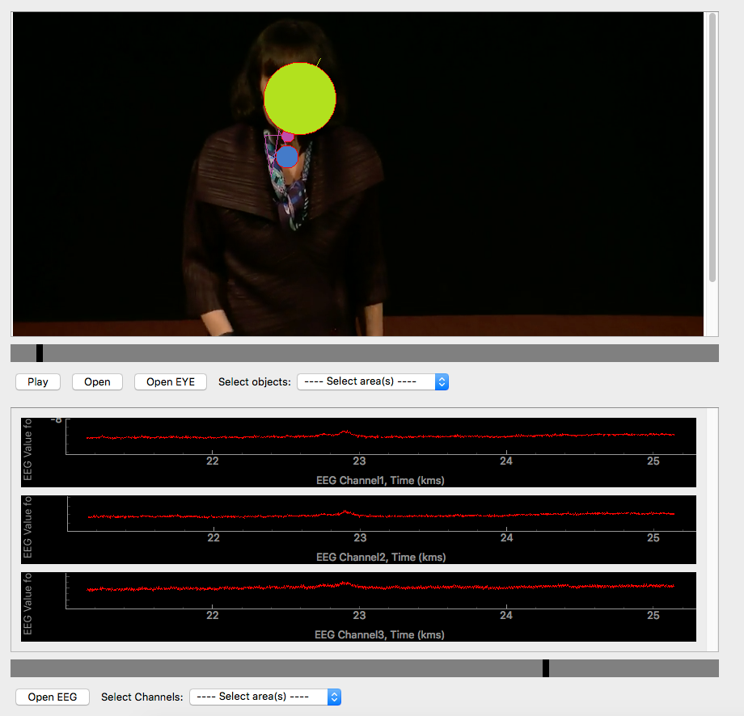
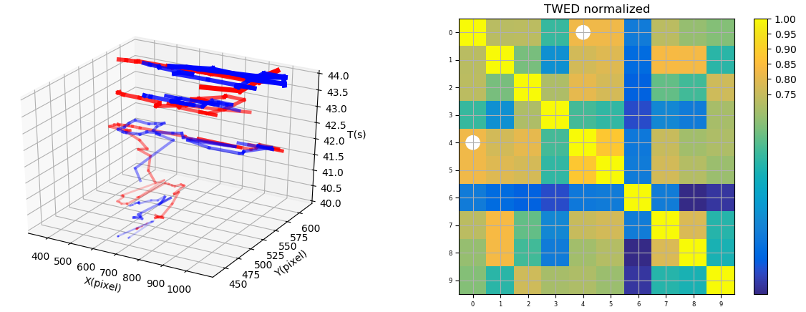

Projects
Overview
Research Interests
I am interested in many different aspects of Computer Vision:
- Large-scale representation learning of 3D Point Cloud
- Instance Segmentation and Object Detection of 3D Point Cloud
- Generative model in video (Frame Prediction and Interpolation).
- Representation learning and feature disentanglement
- Statistical Learning
Current Projects
3D Project
Currently I start to involve in a new project funded by Adobe Research, designing model to transform a 3D mesh to a target 3D model/2D image while still holding its topological structure.
Previous Projects
Core 3D (Funded by IARPA)
The goal of this project is to construct 3D building models from large-scale satellite DEM and point cloud. The point cloud covers several regions of different geographical locations. I have: • Used concepts of principal direction to rectify the building 2D contour after planar RANSAC. • Simplified, merged and aligned the edges according to the proximity in Hough space. • Clustered the plane’s norm direction using DBSCAN and adjusted them to conventional angles.
| Motivaton | single building result |
|---|---|
|  |  |
Stochastic Dynamics for Video Infilling [paper] [project site]
We introduce a stochastic generation framework (SDVI) to infill long intervals in video sequences. SDVI consists of two parts: (1) a bi-directional constraint propagation to guarantee the spatial-temporal coherency among frames, (2) a stochastic sampling process to generate dynamics from the inferred distributions. Experimental results show that SDVI can generate clear and varied sequences.
| Motivation | Model |
|---|---|
|  |  |
Variation Disentanglement Siamese Net [project site] [code]
A project to study unsupervised disintanglement of image representation: Supervised by Prof. Shih-Fu Chang:
- Designed a semi-supervised network that disentangles the label-related and variance representation of a manifold.
- Introduced a Shannon-Entropy based adversarial training counterpart to help the disentanglement, expelling any label-related information from the variance representation.
- Setting recognition and reconstruction task to keep the richness in the feature embedding.
- Implemented the proposed network and conducted the experiment on both MNIST and CASIA Face dataset. Conducted disentanglement, reconstruction, cross-stich evaluation and TSNE Clustering on learnt representation.
| Model | Feature space interpolation | Feature space clustering |
|---|---|---|
|  |  |  |
Neural Gesture (Funded by NSF) [paper] [code]
The project is leaded by Prof. John Kender, studying relationship between gestures of speakers and audiences’ attention. I have:
- Design and implemented distance matching algorithm based on “Time Warp Edit Distance” between every pair of eye tracking trajectories to get a eye-tracking distance matrix.
- Fine-tuned the hyper-parameter of TWED based algorithm by comparing eye movement trails.
- Clustered subjects based on “fast multi-scale detection of relevant communities” by using the distance matrix.
| Attention fixation | Eye trajectory and co-relation |
|---|---|
|  |  |